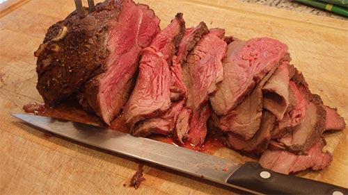
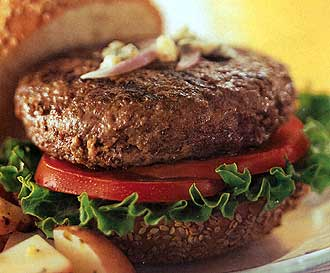
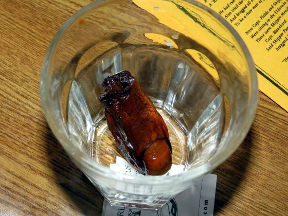

Yukon Territory Food and Drink
Some of the Yukon's food is very distinctive but difficult to produce commercially. There are restaurants
throughout the area, but the best selection is in Whitehorse and Dawson City. Most alcohol is imported from
other areas of Canada and the USA.
Specialities:
- Moose meat is cooked in several ways, from steaming to smoking or roasting, and accompanied by sourdough and vegetables.
- Dall sheep, mountain goat, caribou and porcupine are also eaten, often in burgers.
- Wild seafood includes Arctic grayling, trout, Kokanee salmon, Alaska king crab and halibut.
- Yukon's gold mining past is reflected in some specialities, such as buffalo burgers, musk ox chops and Alaskan salmon.
Regional drinks:
Whitehorse is home to the Yukon Brewing Company, which produces unique lagers and ales.
The Downtown Hotel in Dawson City is famous for the Sourtoe cocktail, which is served with an actual dehydrated human toe
preserved in salt.



Buffalo burger
1 pound ground buffalo meat
1 small Vidalia or other sweet onion, finely chopped (about 1/4 cup)
1 teaspoon Worcestershire sauce
1/2 teaspoon salt
1/8 teaspoon freshly ground pepper
1/2 cup shredded reduced-fat sharp cheddar cheese
4 English muffins, split
4 romaine lettuce leaves, trimmed
4 tomato slices
In a medium bowl, combine the buffalo meat, onion, Worcestershire sauce, salt, and pepper; mix well to combine.
Divide and shape the mixture into 4 balls. With your finger make a deep indentation into each ball. Fill each hole with
2 tablespoons of the cheese. Pinch the meat closed to cover the cheese and shape each ball into a 3/4-inch-thick patty.
Toast the English muffins.
Spray a nonstick skillet with nonstick spray and heat over medium-high heat. Cook burgers 3-4 minutes per side for medium-rare.
Sourtoe Cocktail
1 ounce (minimum) of alcohol
1 dehydrated toe
garnish with courage
Be sure to remember the most important rule: “You can drink it fast, you can drink it slow, but your lips have gotta touch the toe”